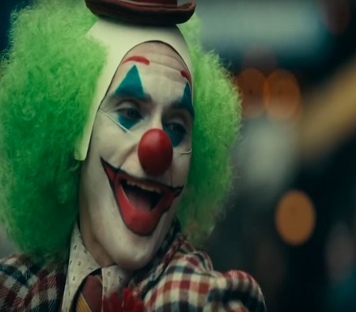
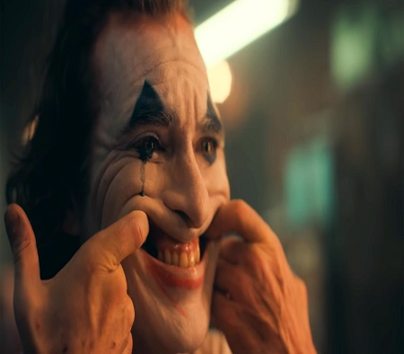
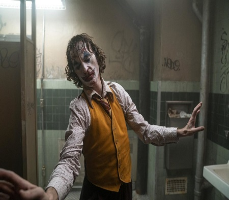
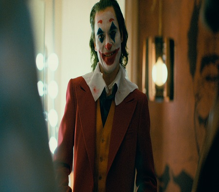

Há mais de uma década atrás, chegava aos cinemas um filme que mudaria o status quo do gênero de
super-heróis. O filme contava com um ar mais sombrio e realista, e apresentou uma releitura de um dos
maiores vilões dos quadrinhos. Batman – O Cavaleiro das Trevas, de Christopher Nolan é um grande marco
na história da sétima arte. A atuação de Heath Ledger, é lembrada até hoje como uma das mais icônicas,
que imortalizou o ator e o seu Coringa no imaginário popular. Depois de tanto tempo, tivemos o “Coringa”
de Jared Leto em Esquadrão Suicida. Mas prefiro não me alongar muito nesse assunto por motivos óbvios.
Eis que em 2019, chega o primeiro filme solo do personagem, protagonizado por Joaquin Phoenix e que
conta com direção de Todd Phillips. E pode-se dizer que o filme foi uma grande surpresa. E que filme
meus amigos.

Logo na primeira sequência do longa, podemos notar que o tom dele é bem diferente de um filme de
super-herói. Principalmente os da Marvel, que por mais que façam um estrondoso sucesso (e merecidamente)
usam e abusam da mesma fórmula. Coringa começa com tudo em um início dolorido e angustiante. De tal
maneira que podemos já mais ou menos sentir o quanto ele é diferente dos filmes de “herói”. E apesar de
toda essa diferença inicial, ao término dele você sente que viu sim um filme do gênero, porém com uma
abordagem mais intimista e adulta. A sensação que ficamos é que estamos lendo um quadrinho do selo
Vertigo ou o mais recente DC Black Label, ambos voltados para um público mais adulto.

Arthur Fleck que é interpretado por Phoenix é um personagem complexo e cheio de nuances. A sua origem
até se tornar o Coringa é muito mais do que um dia ruim (como na HQ Piada Mortal) ou apenas cair em um
tanque de produtos químicos. As “motivações” de nosso Arthur são muito mais profundas e intensas. E o
pior de tudo: são até críveis, já que a abordagem do filme vai mais para o lado mais realístico. A vida
de Arthur é complicada, difícil e suja. Ele já tem diversos problemas: não tem uma boa saúde, pelo
contrário é bem debilitado fisicamente e mentalmente. Problemas com empregos e dificuldade em viver em
sociedade. Gotham City é uma cidade imunda, que ajuda a afundar ainda mais os mais desafortunados.
Coringa mostra de uma maneira bem crua diversas situações de desigualdade social e como uma cidade
abandonada ao relento pode ser o fato gerador de diversos problemas. Alguns menores e outros de
proporções catastróficas.
Coringa é um filme muito intimista. Muito mesmo. Sob o olhar perturbado de Arthur, vamos conhecendo sua
rotina, seus problemas e seus sonhos. E como estes parecem cada vez mais distantes nessa Gotham. Joaquin
Phoenix entrega uma atuação monstruosa (por favor, já entreguem o Oscar à esse homem). É impressionante
o que ele faz em tela. Dá pra perceber o quanto ele se entregou ao papel e deu vida a um personagem
complicadíssimo de se fazer. Aliado ao roteiro intenso que foi escrito por Todd Phillips e Scott Silver,
Coringa resulta em uma obra como poucas. Não estamos falando de um filme onde temos um lunático que dá
risada o tempo todo e saí por aí soltando o gás do riso e resolver assaltar bancos e dominar o mundo. O
Coringa de Phoenix é muito mais profundo. É um verdadeiro estudo sobre a psique do vilão e assim mostrar
o quão doente o mundo pode ser.

Quanto a parte técnica o filme também dá um verdadeiro show. A direção de Phillips aborda muito bem toda
a loucura empregada por Phoenix, dando vida a insanidade de Arthur Fleck. As tomadas, os ângulos e a
fotografia são belíssimas. Os closes nos olhos e nos dentes de Arthur em meio a suas risadas eram
perturbadoras. A trilha sonora que também é um show a parte, deixando o filme em uma sintonia perfeita e
ao mesmo tempo bem desconfortante, devido as situações colocadas em tela. Há algumas sacadas durante o
filme que são simplesmente geniais, e que fazem referências ao legado do personagem. Aliás, esse é um
ponto importante. Apesar de ser um personagem de quadrinhos, o filme não se prende a nenhuma origem já
abordada. O filme toma seu próprio rumo e conta a sua própria história, sem ter que se prender a alguma
cronologia ou a algum universo compartilhado. Ele funciona como uma graphic novel fechada que se
sustenta por si só. E isso é um grande acerto da Warner / DC. Afinal, tudo sobre o Coringa é incerto!
Mas fica um aviso quanto ao filme: ele não é para todo mundo. Dizemos isso por conta de Coringa ser um
filme bem pesado. E quando falamos isso não é apenas pela violência gráfica (que é intensa quando ocorre
e de maneira crua) mas também por todo o contexto que envolve a vida de Arthur. Pessoas mais frágeis ou
crianças, não é aconselhável verem esse filme. Ele toca em algumas feridas que causam impacto em quem
assiste. Devido a sua abordagem mais realista e intensa, vivenciamos algumas situações de injustiça,
abandono, violência, desigualdade e maldade. Coringa não é um filme fácil. Não por ser complexo ou
violento demais, mas por toda a soma dos fatos, e assim nos entrega um filme de certa forma indigesto.
Que é perfeito em mostrar esse mundo distorcido.

Coringa é um filme realmente difícil. Foi até meio complicado escrever sobre ele, pois mesmo após alguns
dias, ele ainda reverbera dentro deste que vós escreve, tamanha foi a experiência que ele proporcionou.
A cada reflexão ele pode te apontar para uma direção. Aliás, essa é uma das qualidades do filme, já que
Coringa além de ser uma baita obra, deixa margens para diversas interpretações e teorias. É de certo um
daqueles filmes que já devem ter diversos tópicos em fóruns de discussão. Sem dúvida é uma daquelas
obras que merecem ser revisitadas de tempos em tempos. Coringa impacta por mostrar mesmo que de forma
fictícia, como o papel do governo e da mídia tem total poder sobre as pessoas. Isso tanto para o bem
quanto para o mal. E o que isso pode resultar.
Além de ser um filmaço que vai muito além telonas, ele ainda pode ser o início de uma nova era desses
filmes mais “sombrios” / adultos baseados em quadrinhos.. Afinal, quem imaginava anos atrás que um filme
solo do vilão poderia dar tão certo? Isso abre um leque enorme de possibilidades. Imagem um filme de Lex
Lurhor nessa pegada? Ou um novo Constantine em uma pegada mais nas HQ’s de Garth Ennis. Tudo vira
possibilidade depois de Coringa. Talvez esse seja um caminho que da DC / Warner possam explorar mais
daqui para frente.